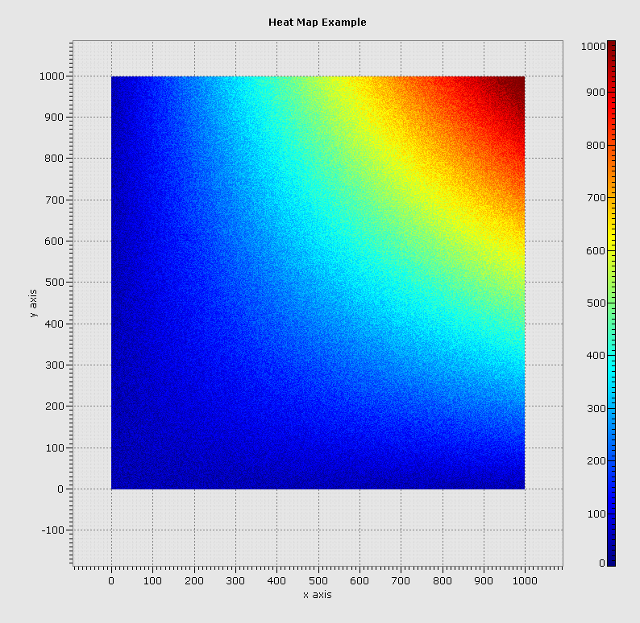
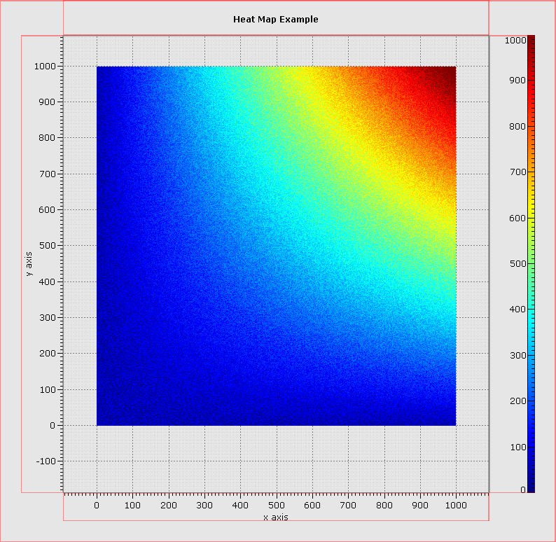

The easiest way to get familiar with what Glimpse offers and how it works is to check out the large library of examples in the core-examples and extras-examples modules. Each example consists of a single runnable java class that demonstrates a feature of Glimpse. Here's the output of HeatMapExample.java:
All Glimpse applications start with a Glimpse Canvas (source) which represents something onto which OpenGL rendering can take place. For Swing applications, this is a SwingGlimpseCanvas, which is also a JPanel and can be directly incorporated into an existing Swing application. SWTGlimpseCanvas provides the analogous capability for SWT applications. Other GlimpseCanvas implementations exist for drawing to off-screen buffers.
The following code snippit is all that is necessary to bring up a Swing JFrame containing a GlimpseCanvas:
{% highlight java %} public static void main( String[] args ) { Jogular.initJogl( ); SwingGlimpseCanvas canvas = new SwingGlimpseCanvas( ); RepaintManager.newRepaintManager( canvas ); JFrame frame = new JFrame( "Glimpse Example" ); frame.add( canvas ); frame.setSize( 100, 100 ); frame.setVisible( true ); } {% endhighlight %}The line Jogular.initJogl( ) automatically places the necessary OpenGL native libraries on the java.library.path. Then a new SwingGlimpseCanvas is constructed. Other constructor arguments allow advanced features like sharing GLContexts between canvases, but the simple zero argument constructor suffices here. The call to newRepaintManager( ) adds the newly constructed canvas to a threaded manager which will repaint the canvas as appropriate. A Glimpse application should have only one instance of RepaintManager which all canvases are registered with. Finally, the canvas can be added to the Swing frame like any other Swing component.
When this snippet is run, a window with a 100 pixel by 100 pixel black square will appear on the screen. In order to get something more interesting showing up, we need to add GlimpseLayouts and GlimpsePainters to the canvas.
Glimpse provides tools to break up a single GlimpseCanvas into many (possibly nested) logical plotting areas which can each be painted on and receive mouse events. Each plotting area is defined by a GlimpseLayout (source) and arranged using Mig Layout. The next image outlines the GlimpseLayouts from HeatMapExample. Although everything is rendered in a single OpenGL canvas, Glimpse allows mouse listeners to be attached to any GlimpseLayout and allows painting to be performed inside a GlimpseLayout without bleeding into adjacent layouts.
Even better, GlimpseLayouts can be nested, allowing easy construction of very complicated plots. For example, three simple heat map plots could be nested into a single hybrid plot. In the image below the GlimpseLayouts are again outlined in red. The example class SimpleLayoutExample.java demonstrates how Mig Layout is used to achieve this arrangement.

Once the plotting areas have been defined, OpenGL rendering inside GlimpseLayouts is performed by GlimpsePainters. Multiple GlimpsePainters can be added to a GlimpseLayout and act like layers. Glimpse provides lots of pre-built painter in the com.metsci.glimpse.painter package. However, most applications also want to perform custom rendering. The com.metsci.glimpse.painter.base package contains the GlimpsePainter interface, as well as a number of abstract helper implementations. In most cases, GlimpseDataPainter2D is a good place to start. It handles setting up the OpenGL viewport and scissor regions and projection matrix so that glVertex( ) calls will draw to the correct screen location based on the GlimpseLayout being painted into and the bounds of the data axes.
The following example demonstrates a very simple GlimpsePainter which draws a blue diagonal line from (5.0,5.0) to (10.0,10.0) in data space. When axes are drawn onto the same GlimpseLayout, the line will be at those coordinates, regardless of how the plot is panned or zoomed.